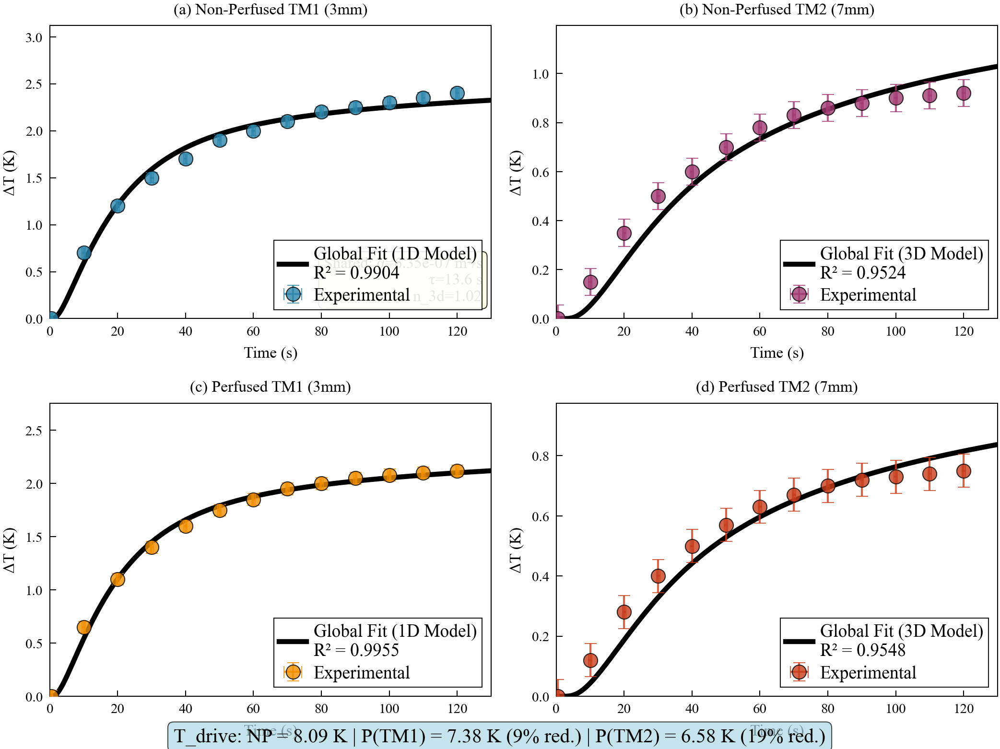
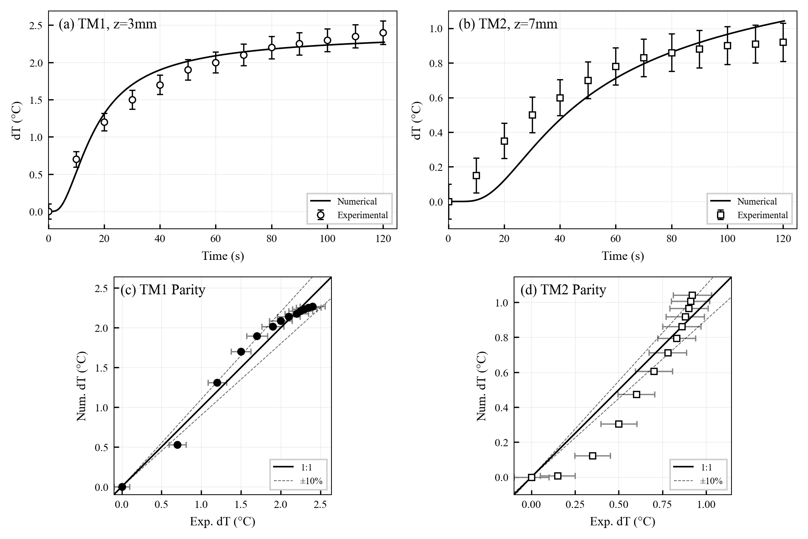
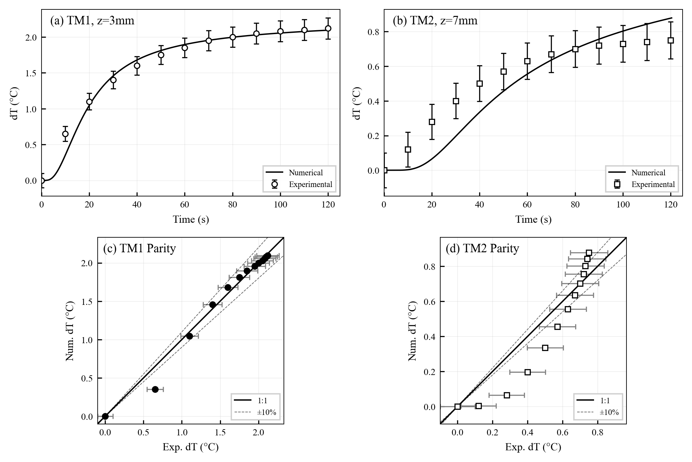
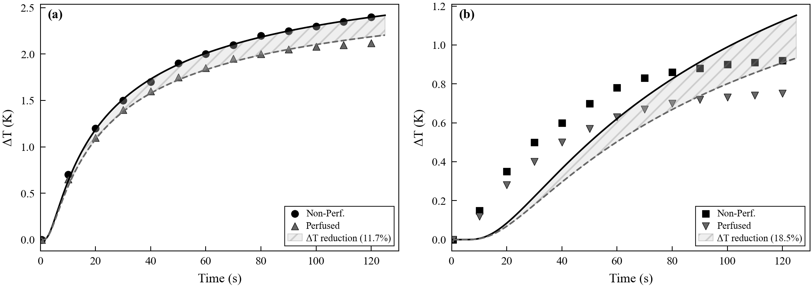
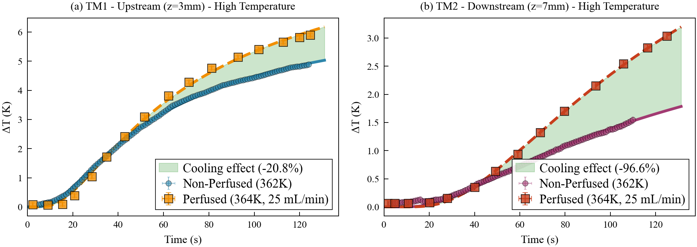

7.2%
MAPE VS 15% CRITERION
The second research thread: NSF-funded transient bioheat modeling for cardiac radiofrequency ablation, in collaboration with Dr. Cristian Linte. Radiofrequency ablation treats arrhythmia by heating tissue through a catheter tip, and the safety question is thermal: what does the temperature field do at depth, over time, with and without blood perfusion carrying heat away. The models here answer with tuned effective properties and validation at the standard medical bar.
The analytical arm fits empirical thermal-response models to measured tissue heating across probe temperatures, extracting effective properties and quantifying how perfusion reshapes the field: flowing blood is a distributed heat sink, and the difference between perfused and non-perfused tissue is the difference between a lesion that stays put and one that grows. The numerical arm solves the transient bioheat equation with those effective properties and faces thermocouple measurements at two depths, 3 and 7 millimeters, across four cases: probe temperatures of 324 K and 362 K, each with and without perfusion.

For the 324 K non-perfused case, the tuned model, effective conductivity 0.55 W/m-K, specific heat 3800 J/kg-K, interface coefficient 3800 W/m²-K, tracks the 3 mm thermocouple with an RMSE of 0.117 °C and R² of 0.972, and the 7 mm probe at 0.114 °C. Agreement is quantified the way medical instrumentation demands: mean absolute percentage error against explicit pass criteria, 7.2% at TM1 against a 15% bar and 9.2% at TM2 against 20%, plus Bland-Altman bias and limits of agreement, with biases of hundredths of a degree. All four cases pass their criteria.


Perfusion is the clinical wildcard. Flowing blood carries heat out of the treatment zone as a distributed sink, so the same delivered power produces a smaller, cooler lesion near vessels than in still tissue, which is exactly where ablation either succeeds or leaves surviving tissue behind. The analytical arm isolates that effect across probe temperatures: the perfused response curves sit systematically below their non-perfused counterparts, and the gap widens with drive temperature.


These are effective-property models tuned per protocol and validated against benchtop thermocouple data; they are decision-support physics, not patient-specific prediction. The tuned parameters are reported with the fits so the calibration is inspectable rather than buried.